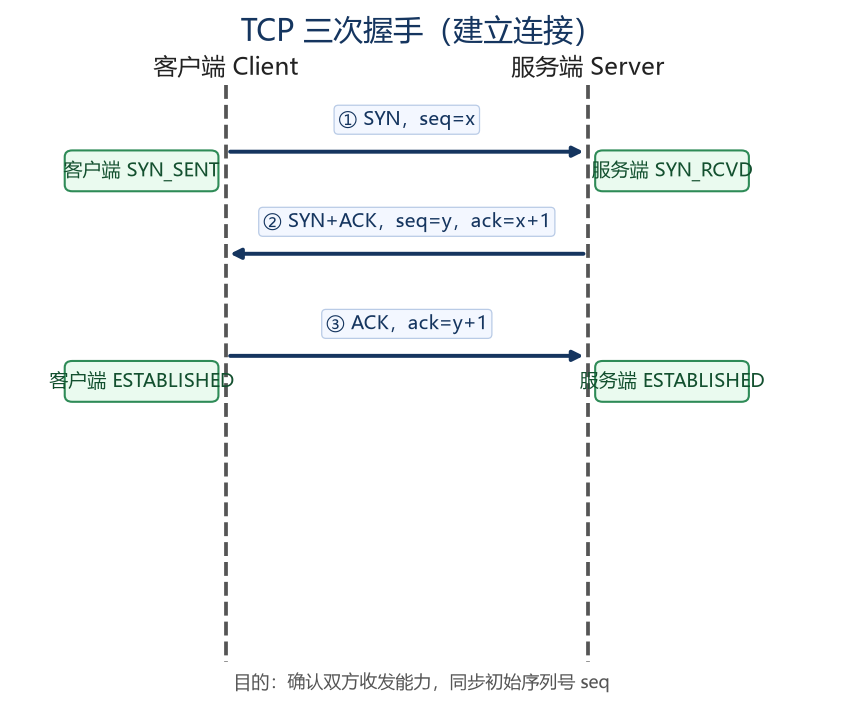
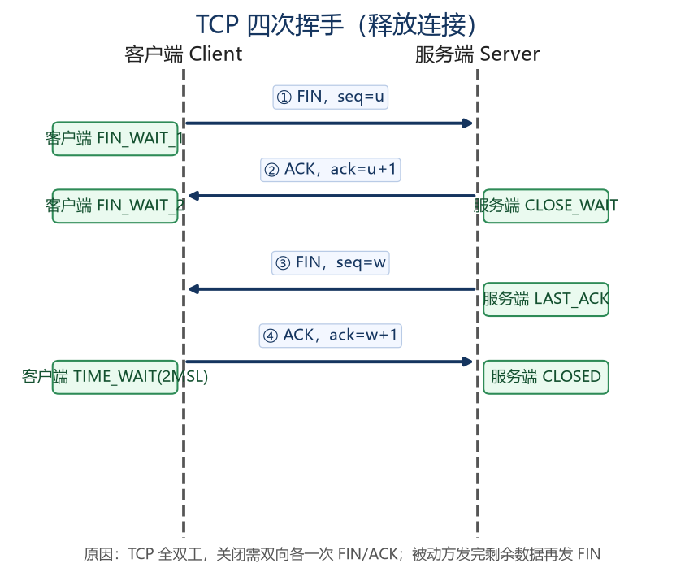

第6章 计算机网络
计算机网络是 CSP-S 初赛重点（概念辨析、IP/子网计算、协议归属），复赛中虽不直接考，但理解网络分层有助于看懂题目背景（如"给定一个网络拓扑求最短路""按 IP 分组"类建模题）。本章把每个可计算的知识点都写成 C++17 示例，方便亲手验证。
6.1 网络拓扑结构与分类
6.1.1 按覆盖范围分类
| 类型 | 范围 | 典型 |
|---|---|---|
| PAN | 个人周边（数米） | 蓝牙 |
| LAN | 局域网（一栋楼/园区） | 校园网、机房 |
| MAN | 城域网（城市） | 城市政务网 |
| WAN | 广域网（跨国家/洲） | 互联网骨干 |
6.1.2 按拓扑分类
总线型、星型、环型、树型、网状型。星型（中心交换机）最常见；网状型可靠性最高、成本高，用于骨干网。
6.1.3 按交换方式
电路交换（如传统电话，独占链路）、报文交换、分组交换（互联网主流，数据切包独立传输）。
6.2 OSI 七层模型与 TCP/IP 四层模型
6.2.1 OSI 七层（从下到上）
| 层 | 名称 | 功能 | 典型设备/协议 |
|---|---|---|---|
| 1 | 物理层 | 比特传输、电压、接口 | 集线器、双绞线 |
| 2 | 数据链路层 | 帧、MAC、差错控制 | 交换机、以太网 |
| 3 | 网络层 | 路由、IP 寻址 | 路由器、IP、ICMP |
| 4 | 传输层 | 端到端可靠/不可靠传输 | TCP、UDP |
| 5 | 会话层 | 会话管理 | — |
| 6 | 表示层 | 加密、压缩、编码 | — |
| 7 | 应用层 | 用户应用 | HTTP、DNS、FTP |
记忆口诀（从下到上）：物数网传会表应。
6.2.2 TCP/IP 四层（从下到上）
网络接口层 → 网际层（IP）→ 传输层（TCP/UDP）→ 应用层（HTTP/DNS 等）。
关系：TCP/IP 把 OSI 的"会话/表示/应用"合并为应用层，"物理/数据链路"合并为网络接口层。
6.2.3 协议封装（教学示例）
数据从应用层往下传时，每层加上自己的头部（有的加尾部），称为封装。下面用字符串模拟"逐层加头"：
#include <iostream>
#include <string>
using namespace std;
int main() {
string data = "Hello";
// 应用层 -> 传输层(加端口头) -> 网络层(加IP头) -> 链路层(加MAC头)
string seg = "[TCP头:端口]" + data;
string pkt = "[IP头:地址]" + seg;
string frame = "[MAC头]" + pkt + "[MAC尾]";
cout << "最终在线路上传输的帧: " << frame << "\n";
return 0;
}
6.3 数据链路层
6.3.1 MAC 地址
MAC 地址是网卡硬件地址，48 位（6 字节），全球唯一，形如 00:1B:44:11:3A:9D。前 24 位为厂商标识（OUI），后 24 位为设备编号。工作在数据链路层，用于同一局域网内寻址。
#include <iostream>
#include <string>
#include <cstdio>
using namespace std;
// 把 48 位 MAC 整数格式化为 xx:xx:xx:xx:xx:xx
string macToStr(unsigned long long mac) {
char buf[18];
sprintf(buf, "%02X:%02X:%02X:%02X:%02X:%02X",
(int)((mac >> 40) & 0xFF), (int)((mac >> 32) & 0xFF),
(int)((mac >> 24) & 0xFF), (int)((mac >> 16) & 0xFF),
(int)((mac >> 8) & 0xFF), (int)(mac & 0xFF));
return buf;
}
int main() {
unsigned long long mac = 0x001B44113A9Dull;
cout << "MAC 地址: " << macToStr(mac) << "\n"; // 00:1B:44:11:3A:9D
return 0;
}
6.3.2 以太网与交换机
- 以太网是最主流的 LAN 技术，帧格式含目的/源 MAC、类型、数据、CRC。
- 交换机工作在数据链路层，根据 MAC 表转发帧（比集线器智能，集线器是物理层广播）。
- 冲突域/广播域：交换机每个端口一个冲突域；VLAN 可分割广播域。
6.4 网络层（IP、子网划分）
6.4.1 IPv4 地址与分类（初赛常考）
IPv4 地址 32 位，点分十进制 a.b.c.d（每节 0~255）。早期分类编址（现已由 CIDR 取代，但初赛仍考）：
| 类别 | 首字节范围 | 网络/主机位 | 用途 |
|---|---|---|---|
| A | 1~126 | 8/24 | 超大型网络（0 和 127 保留） |
| B | 128~191 | 16/16 | 中型网络 |
| C | 192~223 | 24/8 | 小型网络 |
| D | 224~239 | — | 组播 |
| E | 240~255 | — | 保留 |
#include <iostream>
#include <string>
#include <cstdio>
using namespace std;
// 按首字节判断 IPv4 类别
string ipClass(const string& s) {
int a; sscanf(s.c_str(), "%d.", &a);
if (a >= 1 && a <= 126) return "A";
if (a >= 128 && a <= 191) return "B";
if (a >= 192 && a <= 223) return "C";
if (a >= 224 && a <= 239) return "D(组播)";
if (a >= 240 && a <= 255) return "E(保留)";
return "特殊(0/127)";
}
int main() {
cout << "10.0.0.1 -> " << ipClass("10.0.0.1") << "\n"; // A
cout << "172.16.0.1 -> " << ipClass("172.16.0.1") << "\n"; // B
cout << "192.168.1.1 -> " << ipClass("192.168.1.1") << "\n"; // C
return 0;
}
6.4.2 CIDR 与子网掩码（初赛核心计算）
CIDR 用"IP/前缀长度"表示，如 192.168.1.100/24。前缀长度 p 表示子网掩码前 p 位为 1。
- 子网掩码 = 前 p 个 1 后接 (32-p) 个 0。
- 网络地址 = IP & 掩码（该子网最小地址）。
- 广播地址 = 网络地址 | ~掩码（该子网最大地址）。
- 可用主机数 = 2^(32-p) − 2（去掉网络地址和广播地址；p≥31 时特殊）。
#include <iostream>
#include <string>
#include <cstdio>
using namespace std;
unsigned int ipToInt(const string& s) {
int a, b, c, d; sscanf(s.c_str(), "%d.%d.%d.%d", &a, &b, &c, &d);
return ((unsigned int)a << 24) | ((unsigned int)b << 16) |
((unsigned int)c << 8) | (unsigned int)d;
}
string intToIp(unsigned int v) {
char buf[20];
sprintf(buf, "%u.%u.%u.%u", (v >> 24) & 0xFF, (v >> 16) & 0xFF,
(v >> 8) & 0xFF, v & 0xFF);
return buf;
}
unsigned int prefixToMask(int p) {
return (p == 0) ? 0u : (0xFFFFFFFFu << (32 - p));
}
int main() {
string ip = "192.168.1.100";
int p = 24;
unsigned int ipv = ipToInt(ip);
unsigned int mask = prefixToMask(p);
unsigned int net = ipv & mask;
unsigned int bcast = net | ~mask;
unsigned int hosts = (1u << (32 - p)) - 2;
cout << "IP: " << intToIp(ipv) << "\n";
cout << "掩码: " << intToIp(mask) << " (/ " << p << ")\n";
cout << "网络地址: " << intToIp(net) << "\n"; // 192.168.1.0
cout << "广播地址: " << intToIp(bcast)<< "\n"; // 192.168.1.255
cout << "可用主机数:" << hosts << "\n"; // 254
return 0;
}
初赛考法：给"主机数需求"反推前缀长度。例如要容纳 200 台主机，需 2^(32-p) − 2 ≥ 200 → 2^(32-p) ≥ 202 → 取 2⁸=256，故 32-p=8，p=24。
6.4.3 子网划分与路由
- 子网划分：把大网络按借位拆成多个小子网（如 /24 借 2 位成 4 个 /26）。
- 路由：路由器根据路由表转发 IP 包；ARP 把 IP 解析为 MAC（同一网段内）；ICMP 用于网络诊断（ping、traceroute）。
6.5 传输层（TCP 与 UDP）
6.5.1 TCP vs UDP
| 特性 | TCP | UDP |
|---|---|---|
| 连接 | 面向连接 | 无连接 |
| 可靠性 | 可靠（确认、重传、排序） | 不可靠（尽力交付） |
| 速度 | 较慢 | 快 |
| 适用 | 网页、文件、邮件 | 视频、语音、DNS、游戏 |
6.5.2 TCP 三次握手与四次挥手
- 三次握手（建立连接）：客户端 SYN → 服务端 SYN+ACK → 客户端 ACK。
- 四次挥手（释放连接）：主动方 FIN → 被动方 ACK → 被动方 FIN → 主动方 ACK（因 TCP 全双工，关闭需双向各一次）。
三次握手时序图

四次挥手时序图

6.5.3 流量控制与拥塞控制
- 流量控制：用滑动窗口让发送方不超过接收方缓冲区（避免接收方来不及）。
- 拥塞控制：慢启动、拥塞避免、快重传、快恢复，防止网络被压垮。
6.5.4 端口号（教学示例）
端口号 16 位（0~65535），用于区分同一主机上的不同应用：
| 区间 | 名称 | 示例 |
|---|---|---|
| 0~1023 | 知名/系统端口 | HTTP 80、HTTPS 443、DNS 53、FTP 21、SSH 22 |
| 1024~49151 | 注册端口 | 用户程序注册 |
| 49152~65535 | 动态/私有端口 | 客户端临时端口 |
#include <iostream>
#include <string>
using namespace std;
string portType(int p) {
if (p <= 1023) return "知名/系统端口";
if (p <= 49151) return "注册端口";
return "动态/私有端口";
}
int main() {
cout << "端口 80 -> " << portType(80) << "\n"; // 知名
cout << "端口 8080 -> " << portType(8080) << "\n"; // 注册
cout << "端口 50000-> " << portType(50000)<< "\n"; // 动态
return 0;
}
6.5.5 应用层协议端口速查
| 协议 | 端口 | 传输层 | 用途 |
|---|---|---|---|
| HTTP | 80 | TCP | 网页 |
| HTTPS | 443 | TCP | 加密网页 |
| DNS | 53 | UDP(大包用TCP) | 域名解析 |
| FTP | 21(控制)/20(数据) | TCP | 文件传输 |
| SSH | 22 | TCP | 安全远程登录 |
| SMTP | 25 | TCP | 发邮件 |
| POP3 | 110 | TCP | 收邮件 |
| TELNET | 23 | TCP | 远程登录（明文，已淘汰） |
6.6 应用层协议简介
- HTTP/HTTPS：超文本传输。HTTPS = HTTP + TLS 加密。请求方法 GET/POST；状态码 200 成功、404 未找到、500 服务器错误。
- DNS：把域名解析成 IP。递归查询（问本地 DNS）与迭代查询（本地 DNS 逐层问根/顶级/权威）。
- FTP：文件传输，需建立控制连接与数据连接。
- SMTP/POP3/IMAP：邮件发送与接收。
#include <iostream>
#include <string>
using namespace std;
// 教学：拼接一个 HTTP/1.1 GET 请求字符串（不实际发包）
string buildGet(const string& host, const string& path) {
return "GET " + path + " HTTP/1.1\r\n"
+ "Host: " + host + "\r\n"
+ "Connection: close\r\n\r\n";
}
int main() {
cout << buildGet("www.example.com", "/index.html");
return 0;
}
说明：上面仅展示 HTTP 请求文本的拼法，真实发送需要 socket 编程，且涉及 TCP 连接建立（见 6.5.2），不在本章示例范围。
6.7 本章小结
- 分层：OSI 七层（物数网传会表应），TCP/IP 四层（网接/网际/传输/应用）。
- 数据链路层：MAC 48 位、交换机按 MAC 转发。
- 网络层：IPv4 32 位、分类编址（A/B/C/D/E）、CIDR 子网划分（网络地址 = IP & 掩码、广播 = 网络 | ~掩码、主机数 = 2^(32-p) − 2）、ARP/ICMP。
- 传输层：TCP 可靠（三次握手/四次挥手/滑动窗口）、UDP 快；端口 16 位分三档。
- 应用层：HTTP 80、HTTPS 443、DNS 53、FTP 21、SSH 22 等端口务必记熟。
随堂检测（CSP-S 风格）
-
（单选）OSI 模型中，IP 协议工作在第（ ）层
- A. 物理层
- B. 数据链路层
- C. 网络层
- D. 传输层
参考答案
C. 网络层。
解析（考点）：IP、ICMP、路由属于网络层（第3层）；MAC/交换机属数据链路层，TCP/UDP 属传输层。
-
（单选）IP 地址 192.168.1.100/24 所在子网的广播地址是（ ）
- A. 192.168.1.0
- B. 192.168.1.100
- C. 192.168.1.255
- D. 192.168.0.255
参考答案
C. 192.168.1.255。
解析（考点）：/24 掩码 255.255.255.0，网络地址 192.168.1.0，广播地址 = 网络 | ~掩码 = 192.168.1.255。
-
（单选）下列端口号中，属于"知名端口"的是（ ）
- A. 8080
- B. 53
- C. 50000
- D. 49152
参考答案
B. 53。
解析（考点）：知名端口 0~1023，DNS 用 53；8080 属注册端口，50000/49152 属动态端口。
-
（单选）TCP 建立连接需要（ ）
- A. 两次握手
- B. 三次握手
- C. 四次握手
- D. 不需要握手
参考答案
B. 三次握手。
解析（考点）：TCP 面向连接，建立用三次握手（SYN → SYN+ACK → ACK）；释放才用四次挥手。
-
（多选）下列说法中正确的有（ ）
- A. UDP 比 TCP 更快但不可靠
- B. 交换机工作在网络层
- C. HTTPS = HTTP + TLS 加密
- D. MAC 地址长度为 48 位
参考答案
A、C、D。
解析（考点）：交换机工作在数据链路层（B 错）；UDP 无连接更快不可靠（A 对）；HTTPS 即加密 HTTP（C 对）；MAC 为 48 位（D 对）。
-
（单选）某子网前缀长度为 /26，则该子网可用主机数为（ ）
- A. 64
- B. 62
- C. 256
- D. 254
参考答案
B. 62。
解析（考点）：可用主机数 = 2^(32-26) − 2 = 2⁶ − 2 = 64 − 2 = 62。